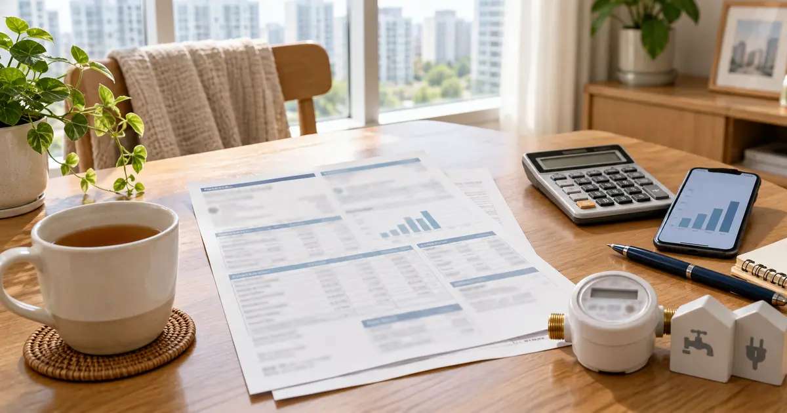
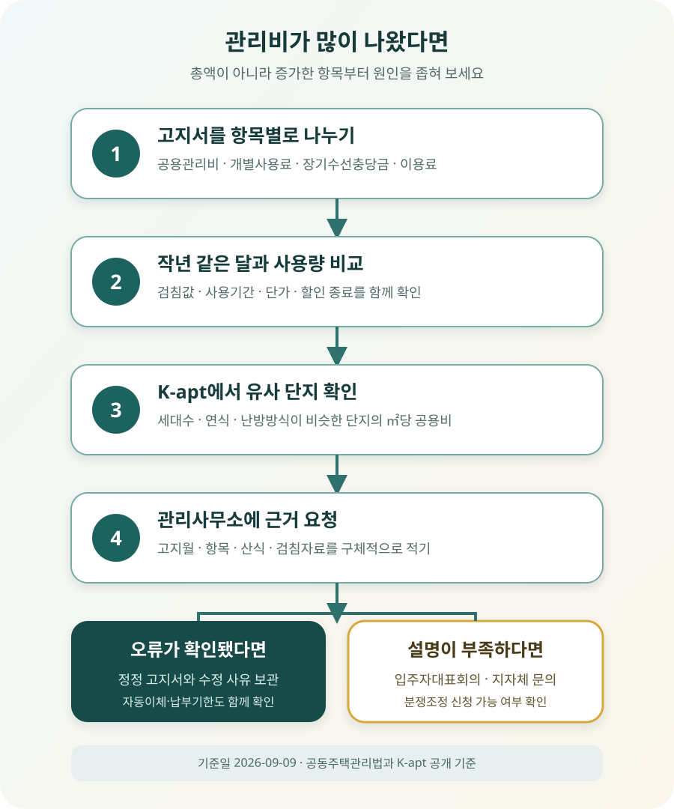

아파트 관리비가 갑자기 올랐다면 어디부터 확인해야 할까?

관리비가 많이 나왔다면 총액부터 따지기보다 공용관리비, 세대별 사용료, 장기수선충당금, 일회성 비용으로 나눠 보세요. 냉난방처럼 계절 영향을 받는 항목은 지난달이 아니라 작년 같은 달과 비교하고, K-apt에서는 우리 집 청구액이 아니라 단지의 ㎡당 공용관리비가 유사 단지와 다른지 확인합니다. 숫자가 설명되지 않으면 관리사무소에 산출내역과 검침값을 서면으로 요청할 수 있습니다.
관리비 총액이 아니라 오른 항목부터 표시하세요
지난달 28만 원이던 관리비가 40만 원으로 나오면 “관리비가 12만 원 올랐다”고 생각하기 쉽습니다. 하지만 관리비 고지서에는 단지 운영에 드는 돈, 각 세대가 사용한 전기·수도·난방비, 소유자가 부담할 장기수선충당금, 주차나 공동시설 이용료 등이 함께 적힙니다. 원인도 확인 방법도 서로 다릅니다.
고지서 두 장을 나란히 두고 각 항목의 부과액과 사용량을 표시하세요. 전기료가 올랐다면 사용량과 단가를, 일반관리비나 경비비가 올랐다면 단지 전체 부과액과 배분 기준을, 장기수선충당금이 올랐다면 적립요율과 장기수선계획 변경 여부를 봅니다. ‘기타’나 ‘정산’처럼 이름만으로 알기 어려운 금액은 관리사무소에 세부 산출근거를 물어야 합니다.
예시: 13만 8,000원은 어디에서 늘었을까?
아래는 같은 평형의 한 세대가 전년도 같은 달 고지서와 비교한다고 가정한 예시입니다. 실제 요금이 아니라 비교 방법을 보여 주기 위한 숫자입니다.
| 항목 | 작년 같은 달 | 이번 달 | 증가액 | 먼저 확인할 것 |
|---|---|---|---|---|
| 공용관리비 | 118,000원 | 127,000원 | +9,000원 | 인건비·경비·청소 계약과 ㎡당 단가 |
| 전기료 | 62,000원 | 119,000원 | +57,000원 | 검침량, 사용기간, 요금단가 |
| 수도료 | 22,000원 | 27,000원 | +5,000원 | 사용량과 누수 가능성 |
| 난방·급탕 | 18,000원 | 20,000원 | +2,000원 | 계량값과 기본요금 |
| 장기수선충당금 | 30,000원 | 42,000원 | +12,000원 | 적립요율·계획 조정 |
| 주차·시설·정산 | 12,000원 | 65,000원 | +53,000원 | 신청 내역과 일회성 부과 사유 |
| 합계 | 262,000원 | 400,000원 | +138,000원 | 전기와 일회성 비용이 증가액의 대부분 |
이 예시에서는 일반관리비 전체를 문제 삼기보다 전기 사용량과 5만 3,000원의 추가 부과 내용을 먼저 확인하는 편이 빠릅니다. 합계만 보고 “우리 단지는 관리비가 비싸다”고 결론 내리면 정작 잘못된 검침이나 신청하지 않은 이용료를 놓칠 수 있습니다.
지난달보다 올랐다는 사실만으로는 이상 여부를 알기 어렵습니다
냉방을 많이 쓰는 8월과 7월, 난방을 시작한 12월과 11월은 사용량 자체가 달라집니다. 명절이나 휴가, 재택근무, 가족 수 변화도 세대별 사용료에 영향을 줍니다. 따라서 이번 달 관리비는 다음 순서로 비교하는 것이 좋습니다.
- 작년 같은 달 — 냉난방처럼 계절성이 큰 항목의 기본 비교 대상입니다.
- 최근 12개월 — 특정 달만 튀는지, 몇 달에 걸쳐 계속 오른 것인지 확인합니다.
- 고지 일수와 검침기간 — 한 달보다 긴 사용기간이 합산됐는지 봅니다.
- 사용량과 청구액 — 사용량 증가인지 단가·부과방식 변화인지 나눕니다.
- 같은 단지·비슷한 면적 — 세대별 사용 습관이 아닌 공용비 차이를 확인합니다.
전기나 수도의 청구액만 비교해서는 원인을 알기 어렵습니다. 사용량은 비슷한데 금액만 올랐다면 단가, 복지할인 종료, 정산 방식, 검침기간을 확인하고, 사용량 자체가 뛰었다면 에어컨·보일러 사용 외에 계량기 오독이나 누수 가능성도 살펴야 합니다. 공동전기료와 세대전기료처럼 이름이 비슷한 항목도 구분하세요.
고지서에 함께 적혀 있어도 성격은 다릅니다
공동주택관리법 시행령 제23조는 관리비 항목을 일반관리비, 청소비, 경비비, 소독비, 승강기유지비, 지능형 홈네트워크 설비 유지비, 난방비, 급탕비, 수선유지비, 위탁관리수수료로 정합니다. 전기료·수도료·가스사용료 등은 사용료로, 장기수선충당금은 관리비와 구분해 징수하도록 하고 있습니다.
| 구분 | 대표 항목 | 금액이 올랐을 때 볼 것 |
|---|---|---|
| 공용관리비 | 일반관리·청소·경비·소독·승강기·수선유지 | 단지 전체 지출, 계약 변경, 배분 기준, 면적당 단가 |
| 개별사용료 | 세대 전기·수도·가스·지역난방·급탕 | 검침값, 사용기간, 사용량, 단가와 할인 |
| 장기수선충당금 | 승강기·외벽·배관 등 주요 시설 교체·보수 적립금 | 장기수선계획, 적립요율, 소유자 부담 여부 |
| 별도 이용료 | 주차·독서실·체육시설 등 | 이용 신청, 차량 등록, 일할 계산과 해지 반영 |
| 일회성 정산 | 전월 누락분·오류 정정·입주 및 퇴거 정산 | 대상기간, 산식, 이전 고지서와 중복 여부 |
수선유지비와 장기수선충당금도 이름은 비슷하지만 다릅니다. 수선유지비는 일상적인 유지·보수에 쓰이는 관리비 항목이고, 장기수선충당금은 장기수선계획에 따라 주요 시설을 교체·보수하기 위해 소유자로부터 적립하는 돈입니다. 관리사무소에 문의할 때도 “수선비가 왜 올랐나요?”보다 고지서에 적힌 정확한 항목명을 말해야 답을 받기 쉽습니다.

K-apt에서는 우리 집 금액보다 단지의 공용비를 비교하세요
공동주택관리정보시스템 K-apt에서는 우리 단지 관리비 조회, 지도에서 관리비 찾기, 다른 단지와 1:1 또는 1:N 비교, 지역·항목별 평균을 확인할 수 있습니다. 단지 이름을 검색한 뒤 최근 월과 전년 동월을 보고, 난방방식·세대수·사용승인일·관리형태가 비슷한 단지를 비교 대상으로 고르세요.
비교할 때는 총액만 보지 말고 ㎡당 공용관리비와 세부 항목을 봅니다. 경비비가 유사 단지보다 높다면 경비 인원과 방식, 일반관리비가 높다면 관리 인력과 위탁관리수수료, 수선유지비가 갑자기 늘었다면 해당 월의 공사·용역 내용을 확인하는 식입니다.
또 모든 공동주택이 같은 범위로 K-apt에 공개되는 것은 아닙니다. 현행 시행령은 50세대 이상 공동주택의 관리비 공개 의무를 두면서도, 100세대 미만은 K-apt 공개를 생략할 수 있도록 정합니다. 검색 결과가 없다고 관리비 내역 자체를 물을 수 없는 것은 아니므로 단지 게시판·홈페이지와 관리사무소를 확인하세요.
검침값이나 전입·퇴거 정산이 이상하다면 바로 기록을 남기세요
세대별 사용료가 갑자기 뛰었을 때는 고지서에 적힌 전월·당월 검침값과 실제 계량기를 비교합니다. 계량기 사진에는 숫자와 촬영일이 함께 남도록 하고, 검침일 이후 사용분이 섞일 수 있으므로 고지서의 사용기간도 확인하세요. 수도 사용량이 평소보다 크게 늘었다면 모든 수도꼭지를 잠근 뒤에도 계량기가 움직이는지 살펴 누수 가능성을 점검할 수 있습니다.
이사 직후라면 입주 전 사용분이나 이전 거주자의 미납액이 섞였는지도 확인해야 합니다. 관리사무소에 입주일, 전입 시 계량기 사진, 잔금일 관리비 정산서를 제시하고 부과기간을 나눠 달라고 요청하세요. 주차료나 커뮤니티 시설 이용료는 차량 말소·회원권 해지가 제때 반영됐는지 봅니다.
잘못된 검침이나 중복 부과가 확인되면 전화 답변으로 끝내지 말고 수정 전 금액, 수정 사유, 수정 후 금액이 적힌 고지서나 확인서를 받는 편이 좋습니다. 자동이체일이 임박했다면 관리사무소에 정정 시기와 납부 방법을 함께 문의하세요. 다툼이 있다는 이유만으로 관리비 전액을 임의로 미납하면 연체료와 별도의 분쟁이 생길 수 있습니다.
세입자라면 장기수선충당금을 따로 표시해 두세요
공동주택관리법 제30조에 따른 장기수선충당금은 주요 시설의 교체·보수를 위해 주택 소유자로부터 징수해 적립하는 돈입니다. 임대차계약에서 세입자가 매달 관리비 고지서와 함께 대신 냈다면, 퇴거할 때 집주인에게 그 금액을 정산받는 경우가 일반적입니다.
관리주체는 사용자가 납부 확인을 요구하면 납부확인서를 발급해야 합니다. 고지서 수십 장을 직접 더하기보다 실제 입주일부터 퇴거일까지의 장기수선충당금 납부내역을 관리사무소에서 발급받아 집주인에게 제시하세요. 계약서에 부담 주체를 달리 정한 내용이 있는지, 중간에 소유자가 바뀌었는지도 함께 확인해야 합니다.
이번 달 장기수선충당금이 올랐다면 관리사무소에 적립요율과 적용 시점, 근거가 된 장기수선계획을 요청합니다. 장기수선계획에 예정된 공사비와 기간을 반영해 산정하므로 단순히 “작년보다 올랐으니 잘못”이라고 할 수는 없지만, 관리비와 구분돼 있는지와 변경 근거는 확인할 수 있습니다.
입주자는 산출내역과 회계 증빙을 요청할 수 있습니다
공동주택관리법 제27조는 의무관리대상 공동주택의 관리주체가 관리비 거래 장부와 증빙서류를 해당 회계연도 종료일부터 5년간 보관하도록 합니다. 입주자 등이 열람이나 자기 비용으로 복사를 요구하면 관리규약에 따라 응해야 합니다. 다만 개인정보나 공개 시 업무의 공정한 수행에 현저한 지장을 줄 수 있는 내부검토 정보 등은 제외될 수 있습니다.
같은 법 시행령 제28조에 따라 관리비 부과명세, 관리규약, 장기수선계획 현황, 입주자대표회의 의결사항 등도 단지 홈페이지와 게시판에 공개하거나 개별 통지하는 대상입니다. “관리비가 왜 비싸요?”라고만 묻기보다 아래처럼 범위를 좁혀 요청하세요.
- 2026년 8월 세대전기료의 전월·당월 검침값과 적용 사용기간
- 2026년 8월 경비비의 단지 전체 부과액과 세대별 배분 기준
- 이번 달 추가된 정산금의 대상기간·산식·이전 부과 여부
- 장기수선충당금 적립요율 변경일과 관련 장기수선계획
- 새 청소·경비·승강기 계약의 입주자대표회의 의결 및 계약 공개자료
요청일, 고지월, 항목, 원하는 자료를 문자·이메일·관리사무소 민원 양식으로 남기고 답변기한을 물어보세요. 세대별 사용내역처럼 다른 주민의 개인정보가 포함된 자료를 요구하기보다는 단지 전체 금액, 계약금액, 배분기준과 본인 세대의 검침자료를 구분해서 요청하는 편이 적절합니다.
설명을 들어도 납득되지 않는다면 순서대로 범위를 넓히세요
첫 단계는 관리사무소의 서면 설명과 정정 여부입니다. 단순 검침 오류나 등록 누락이면 이 단계에서 해결될 수 있습니다. 공용비 계약이나 예산 문제라면 입주자대표회의 회의록, 관리규약, 사업자 선정·계약 정보를 확인하고 입주자대표회의나 감사에게 구체적인 항목을 제기합니다.
자료 공개를 거부하거나 부과 근거가 계속 설명되지 않는다면 관할 시·군·구의 공동주택관리 담당 부서에 감독·민원 절차를 문의할 수 있습니다. 관리비·사용료·장기수선충당금 분쟁은 중앙 공동주택관리 분쟁조정위원회 또는 지역 위원회의 조정 대상이 될 수 있습니다. 신청 전에 자가진단에서 당사자, 단지, 분쟁 유형이 관할에 들어오는지 확인하세요.
횡령이나 허위 장부처럼 구체적인 위법 정황을 의심한다면 단순히 금액이 높다는 느낌과 구분해야 합니다. 고지서, 비교표, 열람 요청과 답변, 회의록, 계약자료 등 확인 가능한 사실을 모아 관할 지자체에 문의하세요. 온라인 커뮤니티의 다른 세대 금액만으로 비리를 단정하거나 개인 이름을 공개하면 별도의 분쟁이 생길 수 있습니다.
관리사무소에 문의하기 전 마지막 확인
- □ 이번 달과 작년 같은 달 고지서를 항목별로 비교했다.
- □ 전기·수도·난방은 금액뿐 아니라 사용량과 검침기간도 확인했다.
- □ 공용관리비, 개별사용료, 장기수선충당금, 이용료를 구분했다.
- □ K-apt에서 유사한 난방방식·세대수·연식의 단지와 비교했다.
- □ 입주·퇴거 정산, 주차대수, 공동시설 신청 내역을 확인했다.
- □ 문의할 고지월과 항목, 금액, 필요한 자료를 구체적으로 적었다.
- □ 계량기 사진과 고지서, 관리사무소 답변을 날짜별로 보관했다.
- □ 세입자라면 장기수선충당금 누계액을 별도로 확인했다.
- □ 분쟁 중에도 납부기한과 연체 처리 방법을 관리사무소에 확인했다.
공식 자료 및 참고자료
- 국가법령정보센터 — 공동주택관리법 제23조(관리비 등의 납부 및 공개 등)
- 국가법령정보센터 — 공동주택관리법 시행령 제23조(관리비 등)
- 국가법령정보센터 — 공동주택관리법 제27조(회계서류의 작성·보관 및 공개)
- 국가법령정보센터 — 공동주택관리법 시행령 제28조(열람대상 정보의 범위)
- 국가법령정보센터 — 공동주택관리법 제30조(장기수선충당금의 적립)
- K-apt 공동주택관리정보시스템 — 우리 단지 관리비와 유사 단지 비교
- 국토교통부 중앙 공동주택관리 분쟁조정위원회 — 관리비 분쟁 상담·조정
정보 기준일: 2026-09-09. 이 글은 아파트 관리비 고지서를 확인하는 일반적인 방법을 설명한 정보이며 개별 법률·회계 자문이 아닙니다. 실제 부과 항목과 배분 방식은 난방방식, 관리규약, 공급계약, 세대수와 사용량에 따라 다릅니다. 오피스텔·상가·비의무관리대상 공동주택은 적용 법령과 공개 범위가 다를 수 있으므로 관리규약과 관할 지자체 안내를 함께 확인하세요.
관리비와 이사 정산에 같이 쓸 도구
- 잔금일 정산 계산기매매 잔금일 관리비·선수관리비·장기수선충당금 정산
- 이사 당일 체크리스트계량기 사진과 공과금·관리비 정산 확인